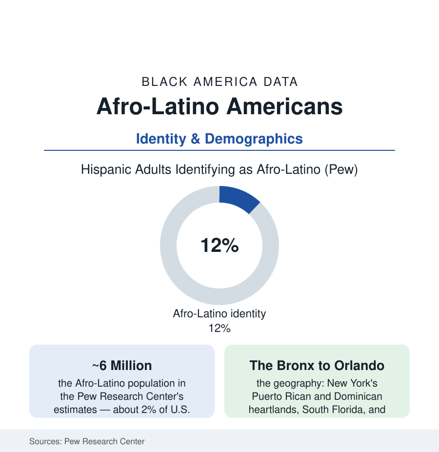

Black Census
Afro-Latino Americans: Six Million People at the Census's Crossroads
About 6 million Afro-Latinos live in the U.S. — counted inside both the Black and Hispanic totals, fully visible in neither. The Pew and Census data on the overlap.

The census asks America two questions — Hispanic or not, then race — and about six million people live in the seam between them: Afro-Latinos, in the Pew Research Center's estimates about twelve percent of U.S. Hispanic adults, counted within this atlas's Black totals whenever they mark Black on the form and invisible within the Hispanic totals on the dimensions where race runs the numbers. Their data describe a population that experiences both files at once — and whose outcomes, on income, health, and discrimination measures, track the Black side of the ledger more than the Hispanic average. This article reads the crossroads.
Who Counts: Identity in the Data
The measurement itself is the first finding: Pew's identity-based estimate (adults of Hispanic origin who also identify as Afro-Latino, about six million) against the census-form count (Hispanics marking Black alone, a smaller number in the ACS tables) — the difference being the identity's fluidity across instruments (the 'some other race' and two-or-more responses of the Hispanic population in the census data being substantially this population declining the offered boxes), and the ancestry map underneath (the Dominican Republic the largest single origin in the Pew data — the island's population itself majority mixed and Black-descended — Puerto Rico second, with Cuba, Panama, Colombia, Honduras, and the Garifuna communities of Central America's coast in the roll). The geography concentrates where the migrations landed: the Bronx and upper Manhattan (the Dominican and Puerto Rican heartlands), Brooklyn and Queens, South Florida's Cuban and now mixed corridors, Orlando's Puerto Rican growth pole of the recent decades, and the Massachusetts and Rhode Island mill-city communities of the Providence profile's own data. The institutions match the map: the AfroLatino Project and the academic centers, the cultural record from the Nuyorican movement's Black poets to the Afro-Latino festival calendar, the Spanish-language media's long-argued color line — the telenovela casting data and the newsroom counts in the media studies — and the bilingual Black church and social-club geography of the Northeast corridor.
The Outcomes: Which Ledger the Data Resemble
Pew's comparative analyses give the crossroads its empirical shape: Afro-Latinos' median incomes and education levels running nearer the Black population's figures than the Hispanic average's in the survey data; the discrimination batteries (the experiences-of-discrimination items — Afro-Latinos reporting rates at or above the Black population's on several measures, and far above non-Black Hispanics'); the colorism gradient inside the Hispanic data itself (the skin-tone studies — Pew's and the academic literature's finding that darker-skinned Latinos report more discrimination and worse outcomes on the measured rungs, the pigmentocracy of the Latin American record operating inside the American one); and the health file's overlaps (the Afro-Latino patient inside the Spanish-language access file and the Black disparities file simultaneously, the data systems' two-question design routinely losing them in both). The political data carry their own distinct row (the Afro-Latino electorate's behavior in the survey crosstabs — a population courted as Hispanic and voting, on the measures the analysts publish, with patterns that confound the courting), and the census-design debate is this population's policy file: the combined-question redesign the Bureau tested for 2030 (one question, mark all that apply — the Bureau's research showing the Hispanic and Afro-Latino counts both rising under it, the measurement politics of the coming count being substantially about the people in this article).
The Culture and the Count to Come
The recognition era's data are cultural as much as statistical: the Afro-Latino identity's public assertion in the recent decade's media and scholarship (the identity term's survey recognition climbing in Pew's waves — younger Hispanics identifying at higher rates, the generational data's direction), the Dominican and Puerto Rican Black-history curricula in the homelands' own debates, the Garifuna's UNESCO-recognized heritage carried to the Bronx, and the census-ancestry tables' slow accommodation (the write-in responses the Bureau codes — 'Afro-Latino,' 'Dominican,' 'Afro-Dominican' — rising in the coded counts). The data's bottom line is the one this section exists to print: the two-question census built a country of boxes, and six million people — a Black population larger than all but a few states' — live in the overlap of two of them, legible fully to neither system alone. Every table in this atlas that says 'Black' contains them in part. Every table that says 'Hispanic' contains them in part. The crossroads is not a margin. At six million, it is a place.
Reading the Afro-Latino Data
Twelve percent of the Hispanic population, two percent of the nation, and outcomes that follow the Black ledger: the Afro-Latino file closes this census section's identity trilogy — with the multiracial count and the foreign-born file — on the census's own frontier. The count is coming into focus a survey at a time. The people were never blurry; the form was.
More in Black Census
The Black Population of the United States: Size, Definitions, and Distribution
The Black population of the United States totals 52.8 million — 15.4 percent of the nation. How the Census Bureau defines and counts the population, and where it lives.
Black Median Household Income in the United States
Black median household income stands at $56,490 in the Census Bureau's annual income report — how the figure is measured, how it compares, and what drives it.
The Black Poverty Rate: Levels, Children, and the Long Trend
The official Black poverty rate is 17.1 percent — against 11.1 percent nationally and 7.7 percent for non-Hispanic White Americans. How poverty is measured and what the data show.
Source: Pew Research Center Afro-Latino studies; U.S. Census Bureau, American Community Survey; UCLA Latino Policy and Politics Institute; AfroLatino Project records.